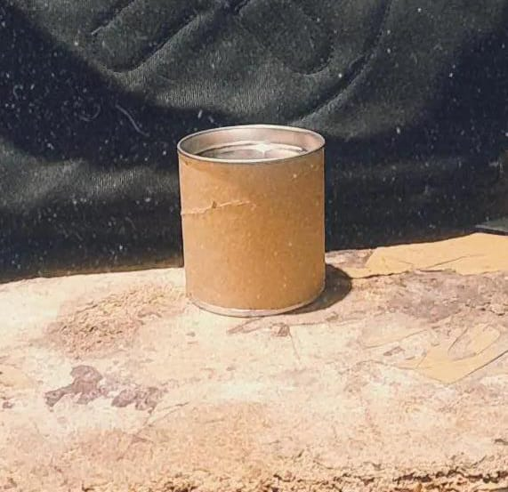

Misión y Visión
Misión: Facilitar a los agricultores y fanaticos de la jardineria el conseguir productos sostenibles que enriquezcan sus cultivos y flores.
Visión: Ser la empresa líder en soluciones orgánicas para agricultura sostenible y reducir el uso de quimicos de la tierra evitando asi mas su desgaste.
Quiénes Somos
Somos personas comprometidas por el cuidado y bienestar de tu tierra y tus plantas nosotros somo Karen Talavera, Erick Meza, Dayla Sagahon, Jose Quiroz, Cesar Lopez
Nuestros Productos
Composta Orgánica Tipo A

$22 por 250 gramos
Esta composta es ideal para tus plantas o huerto personal con recipiente reciclable.
Composta Orgánica Tipo B
$30 por 800 gramos de composta
Perfecta para tus plantas o huerto personal con recipiente reciclable.
Composta Orgánica Tipo C
$40 por 1 kilo de composta
Perfecta para tus plantas o huerto personal con recipiente reciclable.
Galeria De Fotos
En EcoGarden SC ademas de vender composta usamos recipientes reciclables y puedes perzonalizar tu diseño